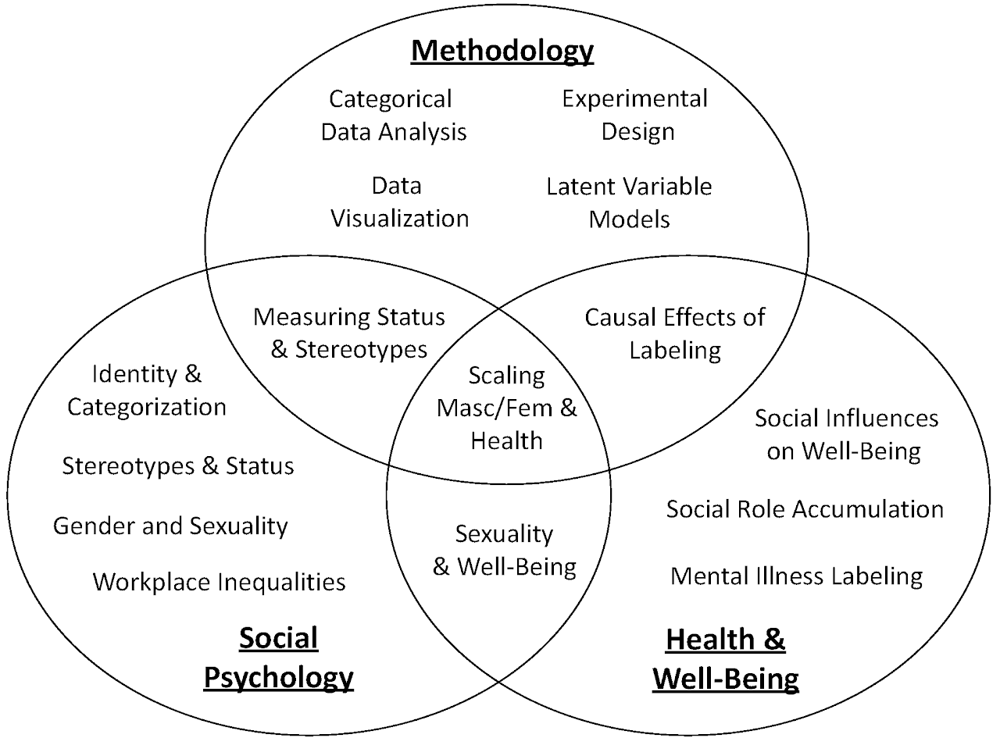
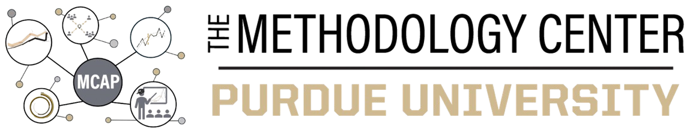

About Me


Overview
I am Dean’s Professor of Sociology and Statistics (by courtesy) at Purdue University. I am also a founder and director for social sciences of the The Methodology Center and a founder and director of sociological science for the Kernan Experimental Lab. My research and education spans sociology, psychology, and statistics. I am a quantitative methodologist specializing in categorical data analysis, data visualization, latent variable modeling, and experimental design. I am also a social psychologist and use theories of identity, status, and stereotyping to understand (a) how social categories impact how we view ourselves and how others view and treat us, and (b) the social factors that influence health and well-being. Both my substantive and methodological work includes a diverse array of quantitative methods including survey experiments, lab experiments, representative survey data, longitudinal surveys, and simulation-based approaches.
My work has appeared in the American Sociological Review, Sociological Methodology, Social Psychology Quarterly, Sociological Science, Social Problems, Social Science Research, Social Science & Medicine, Journal of Marriage and Family, and other peer-reviewed journals. My research has been supported by the National Institutes of Health, the National Science Foundation, the Russel Sage Foundation, Time-Sharing Experiments for the Social Sciences (TESS), the Kinsey Institute, the American Sociological Association’s social psychology section, among others.
I am firmly committed to open science and reproducibility. Thus, I freely share the data, code, and replication files for all of my research projects as well as for all courses, seminars, and workshops I teach.
Research on Quantitative Methodology
My work on categorical data analysis / nonlinear models seeks to expand analysis, interpretation, and visualization tools for these models. For example, I have published on statistical approaches for testing nonlinear interaction effects and visualization tools for interpretation. Another project develops a general framework for examining cross-model comparisons of predictions and effects (across both linear and nonlinear models). A recent project develops methods for summarizing the effects of nominal and ordinal variables in linear and nonlinear models. I am currently working on a book on the marginal effects framework for interpretating model results, which expands on a recent chapter.
I use experiments extensively in my work and research ways to improve experimental designs. A recent article overviews the use of the experimental method in the social sciences and lays out directions for the future—including a new framework of purposive sampling that encourages studying more diverse populations. Multiple projects examine new and old approaches for measuring interpersonal status in groups, including developments for studying groups online. I also study how we measure stereotypes and cultural beliefs, showing divergence across methods and a pessimism bias in perceptions of cultural stereotypes. A new project examines the role of dominant groups in setting cultural common knowledge.
Multiple current projects develop new tools for understanding categorical latent variable models (e.g., item response theory). One offshoot of this work develops a new test of item bias, providing a more accurate test of whether specific items are biased against particular groups.
I also write statistical software to implement the new statistical approaches I develop (primarily using Stata). Available packages implement best practices for data visualization in Stata and R, comparisons of marginal effects across models in Stata and R, summary measures for nominal/ordinal independent variables and dependent variables, ways to test and visualize imbalance across groups, easy ways to produce publication quality descriptive statistics tables, marginal effects and standardized coefficient estimates for item response theory models, measures of model fit for latent class analysis, and statistical tests of mediation.
Teaching
I primarily teach applied statistics and quantitative methods courses and short workshops on advanced quantitative methods. I teach a Statistical Horizons seminar on categorical data analysis and an AI Horizons seminar on data visualization using Stata and LLMs, which are open to anyone.
I teach semester-long graduate courses on categorical data analysis, data visualization, experimental design, latent variable modeling, and social psychology. I also teach one day workshops on data visualization (in Stata and R), survey design, analysis with missing data, workflow practices for reproducible research, statistical programming in Stata, survey experiments, and on advice for teaching methodology courses. The materials for these courses and workshops are freely available at the links above and under the Teaching tab.
Contact Information
PDFs of all of my published articles are available on the Research page of this site.
Feel free to email me if you have questions: tmize@purdue.edu
Social Psychological Research on Social Categorization
I use social psychological theories of status, identity, and stereotyping to better understand how social categories affect both how we view ourselves and how others view and treat us. Multiple projects examine stereotypes and the consequences of these stereotypes. For example, I have examined the intersections of gender and sexuality and the intersections of gender and race-ethnicity, in both cases finding highly contingent effects suggesting we need to consider the combinations of these categories to understand their impact. Another project shows a shift to more traditional attitudes about gender and parenting during the pandemic.
Much of my work focuses on how status and identity influence self- and other-categorization. E.g., One project examines how status processes affect who gets labeled as what sexual orientation category, with heterosexuality being a high status and precarious identity—especially for men. Another project shows how social and structural factors explain rates of sexual identity disclosure across groups and social contexts.
I also examine inequalities in the labor market and the workplace. For example, I have published on wage inequalities based on sexual orientation and on the role of subordinate behavior in maintaining gender inequalities in leadership positions. I am currently working on multiple projects examining parental leave: e.g., how an organization’s parental leave policies influence workplace outcomes for those who take parental leave and how parental leave-taking affects perceptions of good parenting and how likeable new parents are viewed. A new line of this work focuses on differences between married heterosexual parents, gay and lesbian parents, and single parents.